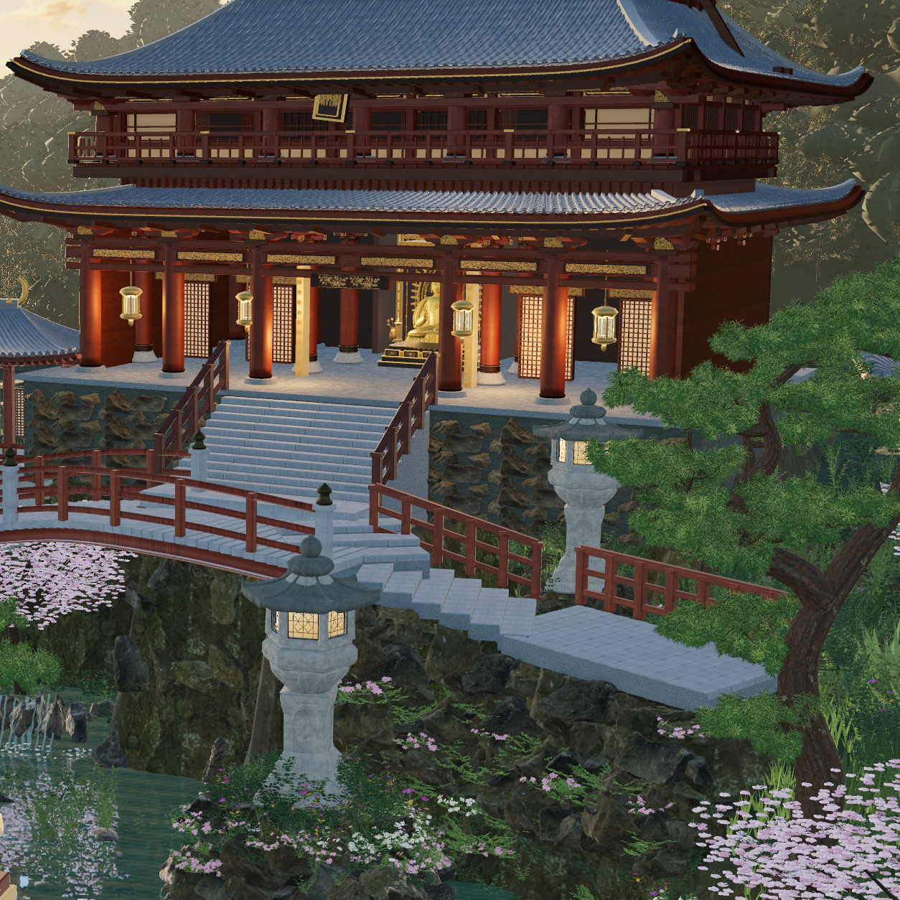

摄影相似度仍未验收。候选图均为实际 3D 原生渲染；参考照片只用于比较。R11 的 full、真实 hero 子视锥和低机位均为 1254 × 1254，并具有相同源码身份。技术通过不代表与照片匹配。
本轮重建六级桥阶与转折石步道，挖开东侧水湾，收窄主阶岩土基座，补上落地灯笼岩岬、真实枝叶花灌木、厚木扇与石灰墙、扁木栏和雕花托座。天空、反射、PMREM 与四个空间采光捕获共同调整；相机曝光保持 1.02。复用已声明的天空生成素材与现有 CC0 / CC BY 资产，没有新增替代场景图片。
仍有明显差距：拱下和右岸岩体偏高、偏硬；夕照不够温暖且填光较均匀；主屋檐、山墙、树冠与花叶分布仍显程序化。R07–R10 中间失败候选与源码全部保留。
R11 source: 9b890d3f87a71298f82841e11d03c4b8ff911ebeb8149ca5e379c175c620b6a6

完整交接、前后数据与限制 · 三机位源码身份与原生验证 · 独立 R06 发布冻结边界 · 全部迭代记录 · R10 图集黑带失败记录 · R11 石材安全图集窗口验证